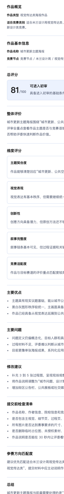

智能预评审报告说明
当前报告以结构化方式呈现赛前预评审结果，帮助用户快速查看作品概览、评分维度、主要问题和修改建议。
报告结构
| 报告部分 | 说明 |
|---|---|
| 作品概览 | 展示作品类型、主题方向、适合竞赛类别和完成度判断。 |
| 作品基本信息 | 展示作品名称、评测类型、竞赛节点和媒体节点。 |
| 总评分 | 展示总分、等级和总体建议。 |
| 整体评价 | 围绕主题、竞赛语境、材料完整度和评审阅读路径描述。 |
| 维度评分 | 展示 5 个评分维度的分数和解释。 |
| 主要优点 / 问题 / 建议 | 列出优势、短板和可执行的修改方向。 |
| 提交前检查清单 | 提醒信息一致性、材料规格、错别字等提交风险。 |
| 参赛方向匹配度 | 说明作品与当前赛道或类别的匹配关系。 |

评分维度与等级
当前报告包含 5 个评分维度：主题契合度、视觉表现、创新性、叙事完整度、竞赛适配度。
| 分数区间 | 等级 |
|---|---|
| 88 分及以上 | 优秀 |
| 76 分及以上 | 可进入初审 |
| 62 分及以上 | 需要明显修改 |
| 0 分及以上 | 不建议直接提交 |
重要限制
- 当前报告用于 Demo 演示和产品沟通，不应作为正式评审结论。
- 当前上传图片仅用于界面展示，不参与真实图像理解。
- 当前 AI 对话仍是演示入口，未来版本可继续扩展。